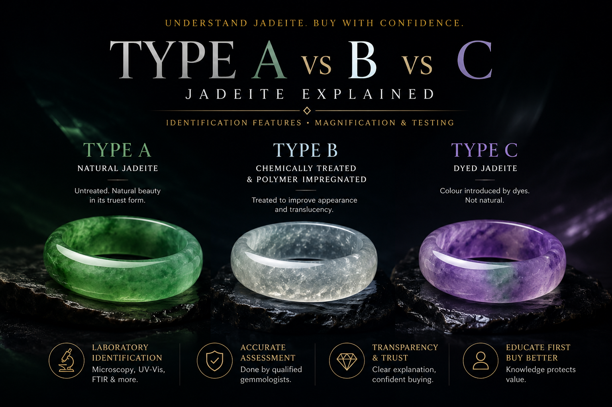

Fair comparison
Colour and translucency should not be compared fairly between natural and treated material without first understanding treatment status.
Most people see colour first. Experienced buyers ask about treatment first. Understanding the difference between Type A, Type B and Type C jadeite helps buyers avoid confusion, unrealistic expectations and misleading comparisons.

Type A jadeite is natural and untreated. Type B jadeite is chemically treated and commonly polymer impregnated. Type C jadeite is dyed. Type B+C jadeite refers to material that has been chemically treated and dyed. This is why treatment status should be understood before comparing colour, translucency, price or peerless beauty.
| Type | Meaning | Buyer note |
|---|---|---|
| Type A | Natural jadeite. No chemical bleaching, resin filling or dyeing. | Preferred by buyers seeking natural jadeite, serious collecting and heirloom jewellery. |
| Type B | Acid-treated and commonly polymer impregnated to improve appearance and translucency. | May appear attractive at first glance, but it is not natural Type A jadeite. |
| Type C | Dyed jadeite with artificial colour enhancement. | Colour does not fully represent the stone’s natural state. |
| Type B+C | Chemically treated, polymer impregnated and dyed. | Often looks vivid or overly even, but the appearance is not naturally produced. |
Colour and translucency should not be compared fairly between natural and treated material without first understanding treatment status.
Natural Type A jadeite is generally preferred for collecting, heirloom jewellery and buyers who value authenticity.
Many buyers focus on intense colour first. Serious understanding begins with natural structure, treatment status and honest viewing.
Natural jadeite may show fine crystalline interlocking structure, natural texture and no obvious acid-etching network. Natural does not mean flawless; it means the material has not been artificially altered.
Type B jadeite may show loosened structure, acid-etching patterns, polymer filling and fluorescence under ultraviolet light, depending on the treatment and testing conditions.
Type C jadeite may show dye concentration along fractures, uneven colour distribution, colour pooling or unnatural colour zoning.
Visual signs can help buyers understand jadeite more intelligently, but accurate identification should be carried out by qualified gemologists using proper instruments and multiple tests. When in doubt, always seek a reputable gemological report.
At Ixchell Jewellery, customers are welcome to arrange independent verification through recognised gemological laboratories in Singapore, including Nanyang Gemological Institute or other recognised authorities.
Type A jadeite is preferred by buyers who want natural untreated jadeite. Type B and Type C are treated materials, so they should not be compared with Type A as though they are the same.
Yes, treated jadeite can look attractive. The issue is not whether it looks nice, but whether the buyer understands what it is and pays accordingly.
Not reliably. Experienced observation can raise suspicion, but proper identification usually requires professional testing and a reputable laboratory report.
Dyeing and treatment can make colour appear stronger, more even or more dramatic than the stone’s natural state. This is why treatment disclosure matters.
Ixchell Jewellery is located at The Adelphi #02-33, Singapore, near City Hall MRT. The boutique specialises in natural Type A Burmese jadeite jewellery and private jadeite viewing.
Visit Ixchell Jewellery at The Adelphi Singapore to view natural Type A Burmese jadeite bangles, pendants, earrings and collector pieces in person. For a quieter experience, kindly DM us on Instagram before visiting.